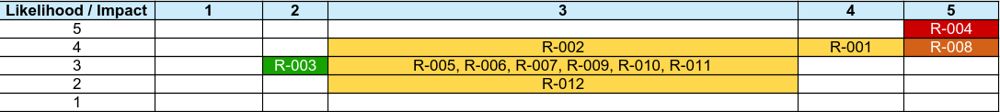

GRC · Risk Management · Cloud Compliance
Complete Risk Register Package
12 Risks · Likelihood × Impact Scoring · Heat Map · Executive Summary
Risk Heat Map

High risk (R-004) in top-right. Most medium risks cluster in the middle. No critical risks.
Risk assessment of the Logistics Tracking System (LTS) following NIST 800-30. 12 risks identified. One High risk (R-004 - terminated credentials not removed). One Medium-High risk (R-008 - prime contractor CUI communication). All others Medium or Low. No Critical risks. Remediation plans documented for Q2-Q3 2026.
R-004 · Terminated Credentials
Score: 20 (High)
Inactive accounts not removed. Fix: Quarterly IAM credential audits.
R-008 · CUI Communication Gap
Score: 16 (Medium-High)
Prime contractors don't tell subs what CUI is. Accept and reassess annually.
R-005 · No IR Chain of Command
Score: 15 (Medium)
No clear breach response plan. Document IR plan by Q2 2026.
| Severity | Score Range | Risks | Count |
|---|---|---|---|
| High | 17-20 | R-004 | 1 |
| Medium-High | 16 | R-008 | 1 |
| Medium | 10-15 | R-001, R-002, R-005, R-006, R-007, R-009, R-010, R-011, R-012 | 9 |
| Low | 1-9 | R-003 | 1 |
Likelihood Scale (1-5): 1 = Rare · 2 = Unlikely · 3 = Possible · 4 = Likely · 5 = Almost Certain
Impact Scale (1-5): 1 = Negligible · 2 = Minor · 3 = Moderate · 4 = Major · 5 = Severe
Risk Score: Likelihood × Impact (range 1-25)
Treatment Options: Accept (monitor), Mitigate (reduce), Transfer (insurance/contract), Avoid (eliminate)
GRC analysts don't just track vulnerabilities—they help leadership understand what matters. This register shows I can translate technical findings into business risk, prioritize remediation, and communicate effectively with executive audiences.
{kind=link}